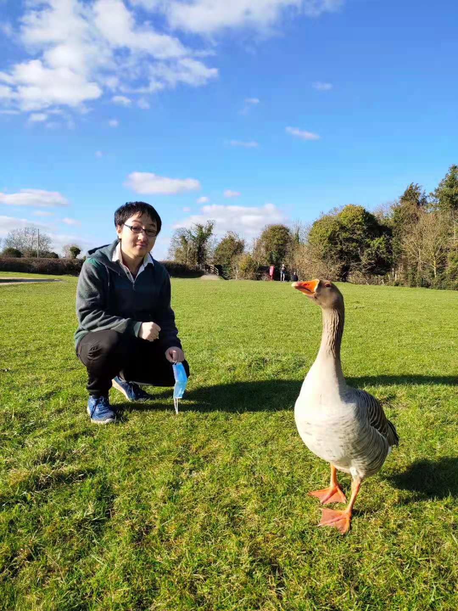

Ning Miao (苗宁)
Researcher
Bytedance AI Lab
Email: miaoning pku.edu.cn , miaoningbytedance.com
pku.edu.cn , miaoningbytedance.com
Researcher
Bytedance AI Lab
Email: miaoningpku.edu.cn , miaoningbytedance.com
Hello! I am a researcher at Bytedance AI lab. My research interests includes machine learning, Bayes method and natural language generation. Currently I'm working on building better models for text generation.